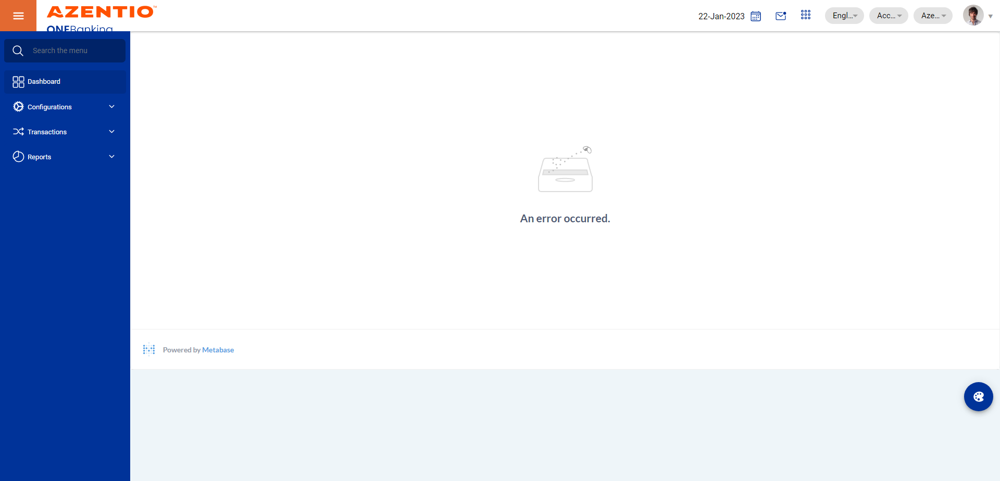
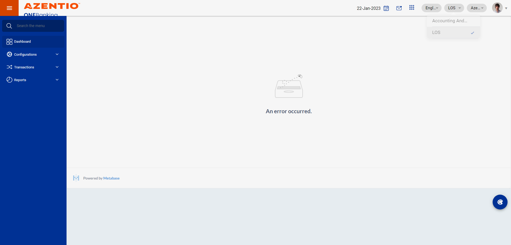
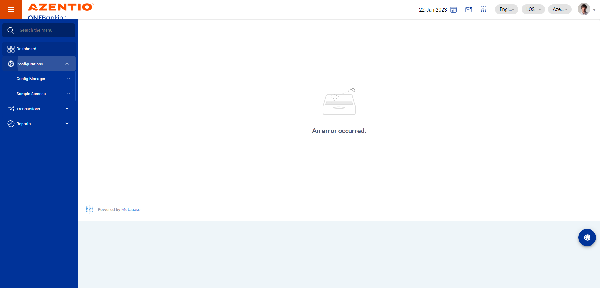
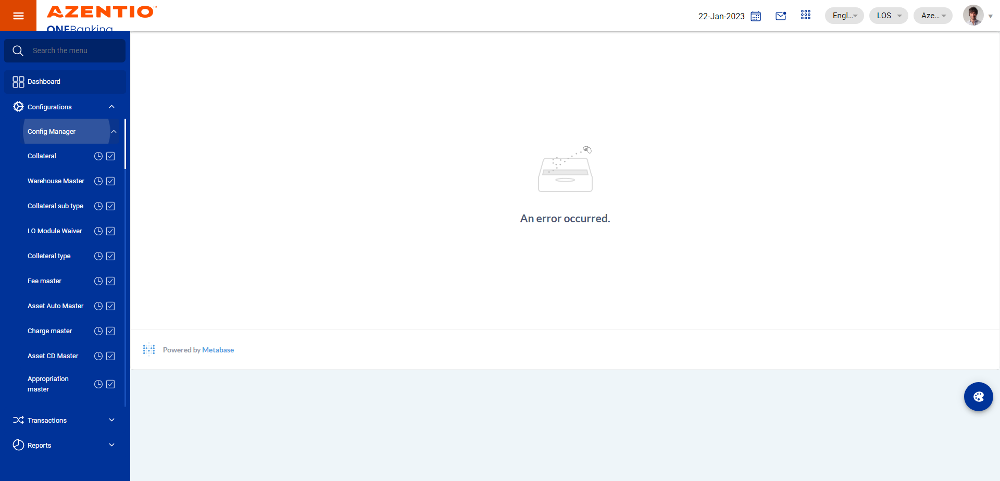
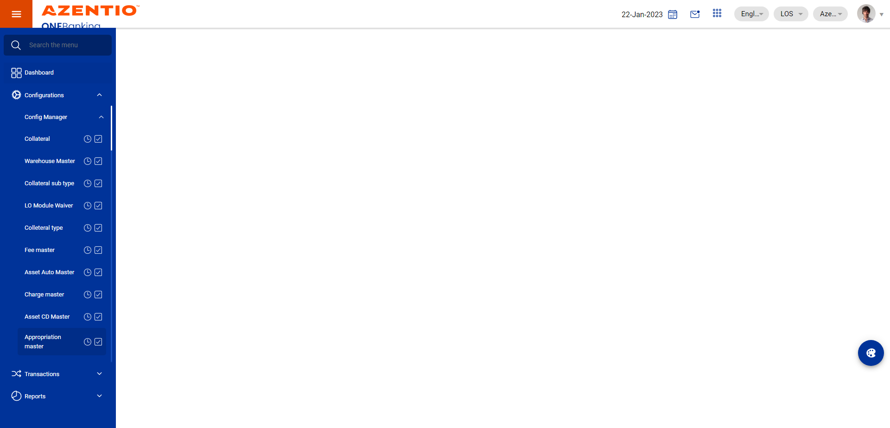

-
To verify the Appropriation master full flow
16:01:46 pm / 31:44:050 Fail
To verify the Appropriation master full flow
03.23.2023 16:01:46 03.23.2023 16:03:30 31:44:050 · #test-id=1FailTo verify the user enter the invalid details in appropriation masterGiven User login as uls maker in asset CD masterstepdefinitions.HooksClass.addScreenshot(io.cucumber.java.Scenario)screenshotAnd User change module options from configuration to losstepdefinitions.HooksClass.addScreenshot(io.cucumber.java.Scenario)screenshotThen User click the Configurations in asset auto masterstepdefinitions.HooksClass.addScreenshot(io.cucumber.java.Scenario)screenshotThen User click the config manager in Appropriation masterstepdefinitions.HooksClass.addScreenshot(io.cucumber.java.Scenario)screenshotAnd User click the Appropriation master edit iconstepdefinitions.HooksClass.addScreenshot(io.cucumber.java.Scenario)screenshotAnd User click the action edit icon in Appropriation masterstepdefinitions.HooksClass.addScreenshot(io.cucumber.java.Scenario)screenshot And User click the add icon in list of Appropriation details for Appropriation masterstepdefinitions.HooksClass.addScreenshot(io.cucumber.java.Scenario)screenshot
And User click the add icon in list of Appropriation details for Appropriation masterstepdefinitions.HooksClass.addScreenshot(io.cucumber.java.Scenario)screenshot And User enter the values in due type for Appropriation master validationstepdefinitions.HooksClass.addScreenshot(io.cucumber.java.Scenario)And User enter the values in sequence no for Appropriation master validationStep skippedAnd User enter the values in parent sequence no for Appropriation master validationStep skippedAnd User enter the values in list of appropriation remarks for Appropriation master validationStep skippedAnd User click the save icon in Appropriation masterStep skippedAnd User verify the invalid field popup confirmation in appropriationStep skippedstepdefinitions.HooksClass.TearDown(io.cucumber.java.Scenario)
And User enter the values in due type for Appropriation master validationstepdefinitions.HooksClass.addScreenshot(io.cucumber.java.Scenario)And User enter the values in sequence no for Appropriation master validationStep skippedAnd User enter the values in parent sequence no for Appropriation master validationStep skippedAnd User enter the values in list of appropriation remarks for Appropriation master validationStep skippedAnd User click the save icon in Appropriation masterStep skippedAnd User verify the invalid field popup confirmation in appropriationStep skippedstepdefinitions.HooksClass.TearDown(io.cucumber.java.Scenario)
Started
Mar 23, 2023 04:01:43 pm
Ended
Mar 23, 2023 04:03:30 pm
Features Passed
0
Features Failed
1
Features
Scenarios
Steps
Timeline
Tags
| Name | Passed | Failed | Skipped | Others | Passed % |
|---|---|---|---|---|---|
| @AT-AM-003 | 0 | 1 | 0 | 0 | 0% |
System/Environment
| Name | Value |
|---|---|
| version | 10 |
| os | windows |
-
@AT-AM-003
1 tests
@AT-AM-003
1 failedStatus Timestamp TestName Fail 16:01:46 pm To verify the user enter the invalid details in appropriation master To verify the Appropriation master full flow.To verify the user enter the invalid details in appropriation master
-
org.openqa.selenium.NoSuchWindowException
1 tests
org.openqa.selenium.NoSuchWindowException
1 failedStatus Timestamp TestName Fail 16:02:29 pm And User enter the values in due type for Appropriation master validation To verify the Appropriation master full flow.To verify the user enter the invalid details in appropriation master.And User enter the values in due type for Appropriation master validationFail 16:03:30 pm stepdefinitions.HooksClass.addScreenshot(io.cucumber.java.Scenario) To verify the Appropriation master full flow.To verify the user enter the invalid details in appropriation master.stepdefinitions.HooksClass.addScreenshot(io.cucumber.java.Scenario) -
org.openqa.selenium.WebDriverException
1 tests
org.openqa.selenium.WebDriverException
1 failedStatus Timestamp TestName Fail 16:03:30 pm stepdefinitions.HooksClass.TearDown(io.cucumber.java.Scenario) To verify the Appropriation master full flow.To verify the user enter the invalid details in appropriation master.stepdefinitions.HooksClass.TearDown(io.cucumber.java.Scenario)